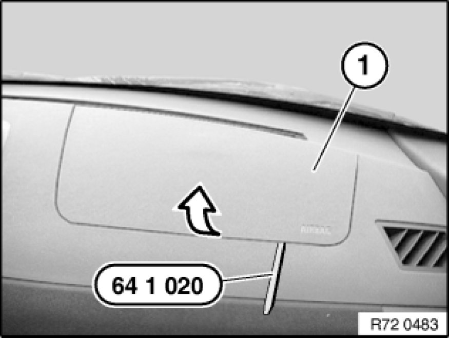
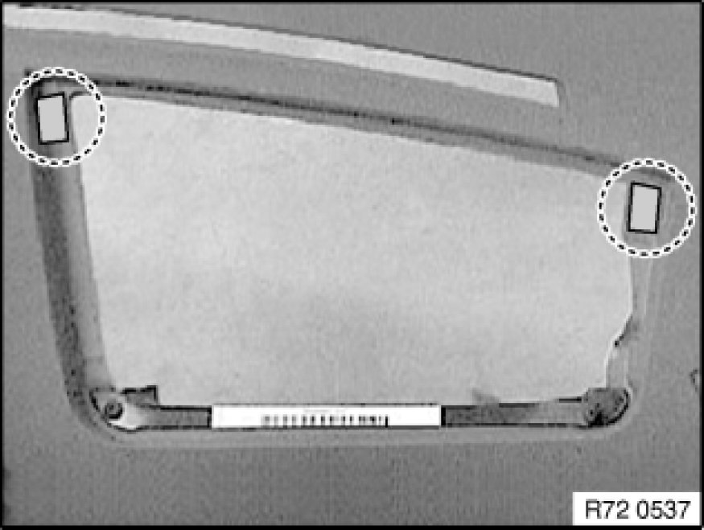
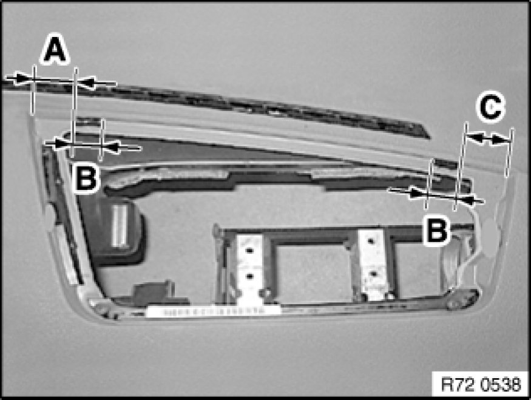
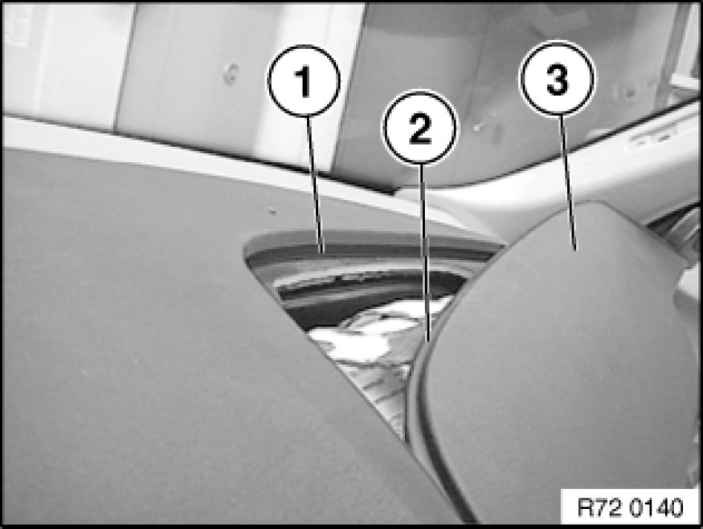
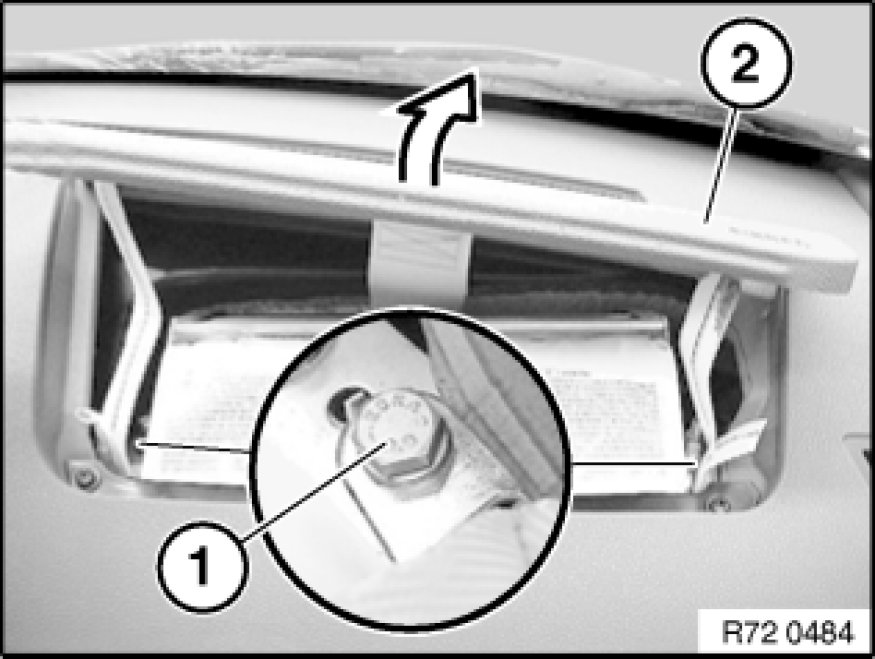
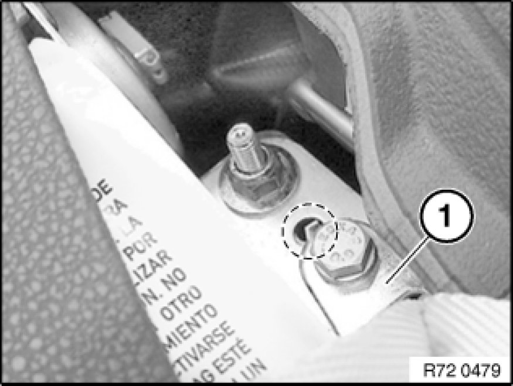

51 45 055 - Removing and installing/replacing airbag cover on passenger side
51 45 055 - Removing and installing/replacing airbag cover on passenger side

Special tools required:
- 64 1 020 64 1 020 Release Hook

Warning!
Each time the passenger airbag is triggered, it is necessary to replace its airbag cover.
We cannot guarantee that the retaining straps of the airbag cover will not be damaged when the airbag is triggered.
If a damaged airbag cover is reused, we cannot guarantee that the retaining straps will work properly.

Necessary preliminary tasks:
- Disconnect battery negative lead Disconnecting and Connecting Battery Negative Lead

Lever out airbag cover (1) with special tool 64 1 020 64 1 020 Release Hook.

Note:
If necessary, remove felt.

Installation Note:
Remove adhesive residue and clean adhesive area with isopropanol.
Apply 5 mm dia. butylene tape (Terostat 2460) on left and right in groove.
A - = 30 mm ± 2
B - = 15 mm +5/-0
C - = 40 mm ± 2

Installation Note:
Clean adhesive area on airbag cover (3) with isopropanol.
Remove backing paper from butyl.
Lug (2) of airbag cover (3) must snap into groove (1) in instrument panel.

Release screws (1) and remove airbag cover (2).
Tightening torque 72 12 10AZ Airbag Modules.

Installation Note:
Make sure turning lock of fitting (1) is correctly seated in bore hole.